The website will offer a wealth of botanical information, aiding users in plant exploration, learning, and identification. Users can collect and save searched plants in a digital garden or room, and take notes about each plant's details.
Challenges and Growth
Completing this project within a two-week timeframe presented a significant challenge. The most daunting aspect was selecting an appropriate topic and finding a suitable dataset. I faced difficulties in effectively designing the dataset usage and interactive application. However, I made an effort to create an informative poster to convey my ideas, which is visible on the left-hand side.
Reflection
Description:
In this project, I had to complete the task within a tight two-week timeframe. Feelings:
I felt a considerable amount of pressure due to the limited time. Selecting a relevant topic and finding the right dataset was particularly daunting. Evaluation:
Despite the challenges, I managed to overcome some of the difficulties by putting effort into designing the dataset usage and creating an interactive application. Analysis:
The project's time constraints pushed me to focus on critical tasks and problem-solving. It made me realize the importance of effective time management and the need for better planning when selecting topics and datasets. Conclusion:
Ultimately, I succeeded in delivering the project, and my efforts culminated in the creation of an informative poster that effectively conveyed my ideas. Action Plan:
In future projects, I plan to improve my topic selection process and ensure I have access to suitable datasets from the beginning, which should help alleviate some of the pressure caused by tight timeframes. I'll also aim to further enhance my time management and problem-solving skills to face challenges more efficiently.
2B-2E: Team Project
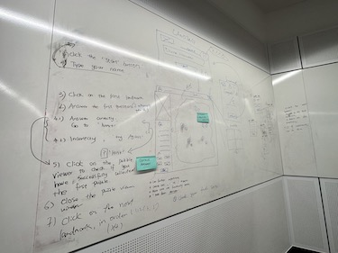
After 2C, we brainstormed for a new game mode.
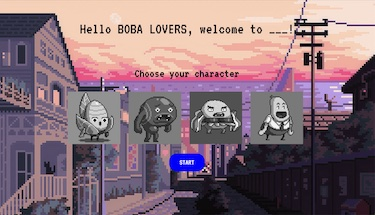
My initial code test for "user input".
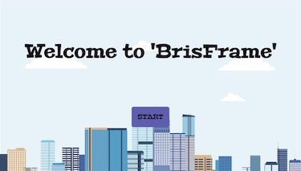
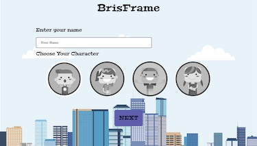
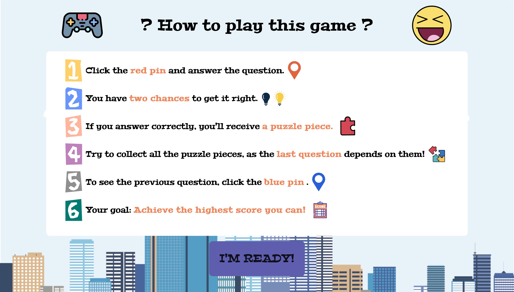
My contributions to the team project, front-end code and some back-end work, including user input and character selection.
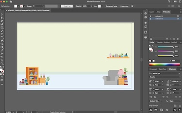
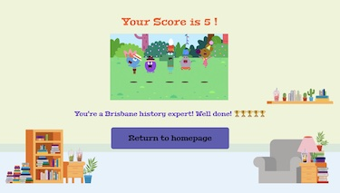
Making "score page" for our web game.
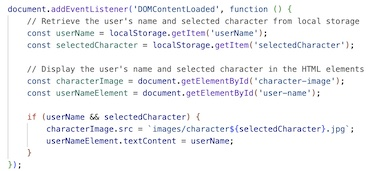
The codes for user input and character selection.
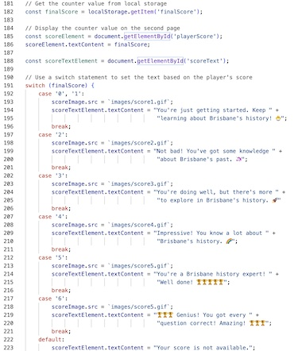
The code for the game score and different messages associated with varying scores.
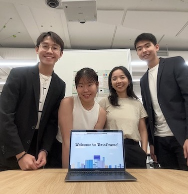
Tradeshow presentation.
About "BrisFrame"
"BrisFrame" is a digital educational game designed to provide an engaging learning experience. By incorporating interactive components such as multiple-choice questions, puzzles, character customization, and various Brisbane locations, it encourages active participation in the learning process.
Challenges and Growth
I truly enjoyed working as a team with my fellow teammates. We invested a significant amount of time collaborating to solve coding challenges and ensuring our slides and posters met the requirements. Additionally, we practiced together before every presentation and trade show. The most significant challenge we encountered was the collaborative coding process, as it was our first time coding with others. Although we utilized Github for version control, we still faced difficulties in merging our code. It was only towards the end of the course that we managed to overcome this hurdle. Looking back, I believe a more effective approach for similar situations in the future would be seeking assistance from our tutors, who undoubtedly possess greater expertise. In summary, this team project has been a tremendous learning experience, and I have a deep appreciation for our final product, despite recognizing areas for potential improvement.
Related Paper Reviews
1. Diabetic Mario: Designing and Evaluating Mobile Games for Diabetes Education
"Diabetic Mario" represents a game that effectively combines education with entertainment. Its design follows to a set of crucial conditions: firstly, the game structures its activities to match the players' varying levels of difficulty. Secondly, it provides concrete feedback to assist children in assessing their performance and identifying areas for improvement. Thirdly, the game incorporates a range of challenges, facilitating the acquisition of progressively complex information on various aspects. In addition to these conditions, the designers employ specific strategies for crafting a successful game. Notably, these strategies involve enhancing the game's structure through the inclusion of educational features, providing knowledge-rich visual feedback, and introducing a diverse array of challenges during gameplay. Consequently, the paper offers valuable insights on how to create a more effective game-based learning environment that is both inspiring and highly beneficial.
2. Foundations of Game-Based Learning
This paper underscores the need to provide reasons and insights into the application of game-based learning. It also emphasizes the importance of considering the player's experience within the context of game-based learning.
3. Mobile game-based learning in secondary education: Students’ immersion, game activities, team performance and learning outcomes
The article explores the use of mobile collaborative game-based learning for financial literacy. The results indicate that students exhibited a greater interest in the subject after engaging in the game, compared to their level of interest before playing.
Individual Contributions
I began by developing the basic HTML and CSS for the project. To minimize the creation of numerous web pages, I employed pop-up windows within a single index.html file, utilizing the "display: none" property and JavaScript to trigger specific events upon button clicks.
In addition, I implemented JavaScript functions to enhance player engagement within the web game. For instance, I allowed players to input their names and select characters on the landing page, storing this data in JavaScript before transferring it to other game page and displaying it using localStorage, span tags, and the textContent property.
Additionally, I was responsible for creating the game introductions, which included a substantial amount of text and incorporated images to facilitate players' understanding of the context.
Furthermore, I designed the background for the final score page, hiding four hidden boba teas as an easter egg to commemorate our four-person team known as "Boba Lovers." I also utilized JavaScript to present various sentences for different score stages, utilizing a switch statement and span tags for this purpose.
Moreover, I maintained records of all user testing sessions conducted in the studio.
Reflection
Description:
In our team project, we decided not to assign specific roles. We were enthusiastic about working collaboratively on all aspects of the project. Additionally, we were unsure about the challenges of coding, and none of us had strong coding skills. The initial stages of our project progressed smoothly, but as we moved forward, time management became increasingly challenging. Feelings:
At the start, I felt optimistic about our team's commitment to a shared approach. However, as time passed, it became obvious that our lack of role allocation and the increasing complexity of the project was making time management difficult. We began to feel the pressure as the project's deadline approached. Evaluation:
Reflecting on the project, the decision not to allocate roles initially had its value, promoting a sense of equality and a collective effort. However, it became apparent that it also hindered our ability to manage our time effectively as the project grew more demanding. Analysis:
Following the completion of the 2D MVP, it is evident that we should adopt a more structured approach to task division. By this point, we have a clearer understanding of each team member's strengths and abilities, including coding, documentation, design, and more. Given the limited time frame remaining, with just a couple of weeks until the final product and report are due, it becomes imperative to allocate work in a more specific and divided manner. Conclusion:
This experience has highlighted the importance of striking a balance between collaboration and practicality. When team members lack specific skills, a strategic role allocation should be considered to ensure time management remains on track. It's crucial to adapt the work approach as the project evolves. Action Plan:
In future projects, I will suggest for a more structured role allocation strategy, factoring in team members' skills and the project's demands. This will help us manage time efficiently and adapt our approach as needed, especially when deadlines are looming. The experience highlight the significance of effective time management in achieving successful outcomes.
1A: Portfolio
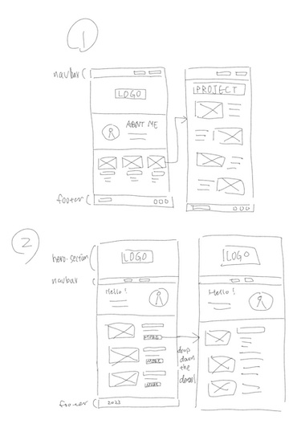
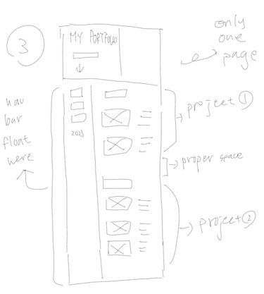
Three different layouts.
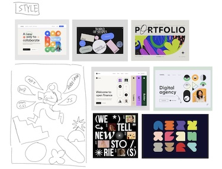
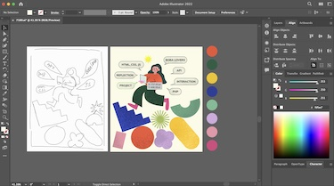
Sketching and creating for hero section image, and style inspiration process.
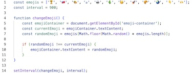
The codes for dynamic emoji changing.
Languages and Tools
HTML, CSS, JavaScript
Visual Studio Code, Adobe Illustrator
Layouts, Style and Design
In the initial stages of designing my portfolio website, I had a plan to create a landing hero section with my logo, multiple pages, and a self-introduction section. However, I decided to consolidate everything into a single page to enhance the user experience. I believed that minimizing the steps required for users to access all the content on my portfolio page was important. Then, I had considered implementing fold/unfold sections, but upon experimentation and doing some testing, I concluded that keeping all sections unfolded was more visitor-friendly.
This website is primarily constructed using HTML, CSS, and a touch of JavaScript. Considering the extensive content in my portfolio, I chose a soft color scheme and selected a legible font. I ensured that each sentence and graph had an appropriate line height and text alignment to enhance readability while maintaining a minimalist design.
For the landing page graphic, I chose to represent the essence of this website, which serves as a record of my learnings and experiences throughout the course. I created a graphic using Adobe Illustrator, incorporating keywords relevant to my journey.
In addition, you'll notice that the "Start exploring" button on the landing section features a dynamic emoji that changes. This addition is intentional, as it not only adds an element of fun and visual interest to the page but also serves as a subtle trigger, encouraging visitors to click and dig into the content.
Reflection
Description:
In Week 8, I made the decision not to attend the workshop that was designed to assist students in setting up their individual zones and connecting to the server for portfolio uploads. Instead, I relied on reviewing the workshop's task sheet, believing that I would be able to handle the process independently. Feelings:
At the time, I felt confident in my ability to manage the task on my own. However, as the portfolio's submission deadline approached, I discovered that my individual zone was experiencing issues, and I realized that I had missed valuable opportunities for hands-on assistance from the tutors. Evaluation:
In retrospect, my choice not to attend the workshop had both positive and negative aspects. While it allowed me to work on my own schedule, it also left me without the essential knowledge and guidance I needed to troubleshoot the issues with my individual zone effectively. Analysis:
Looking back, it is evident that my overconfidence in my ability to complete the task without attending the workshop was a significant misjudgment. I failed to anticipate the potential technical challenges and missed the chance to receive timely help. This lack of preparation impacted my ability to complete the project on time. Conclusion:
This experience underscores the importance of recognizing when to seek support and guidance, even if one feels competent. It's vital to be proactive in addressing potential challenges and not rely solely on one's self-assessment of their abilities. Action Plan:
In the future, I will make a concerted effort to attend relevant workshops and seek assistance when needed, especially when dealing with technical tasks. I have learned that being humble and open to guidance can save a lot of time and prevent unnecessary last-minute stress when facing unexpected issues.
Reflection on Course
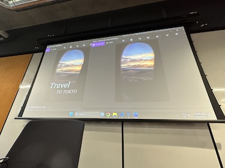
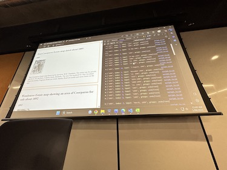
Some photos from workshops.
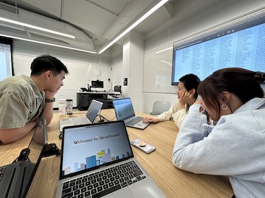
Doing user-testing on studios.
I sincerely appreciated the assistance I received from the tutors throughout the entire course.
There was no workshop in the first week. However, after we had arrived and waited for 30 minutes, someone noticed a small, unhighlighted message indicating that there would be no workshop in the first week. I hope that the teaching team can make more clear and explicit announcements for such matters in the future.
The most significant concern I wish to emphasize is the frustration I experienced while attempting to follow instructions on a very vague rubric. I hope that in the future, there will be a clearer and more comprehensive rubric for students to follow.
Reflection
Description:
Throughout the course, I participated in various workshops, most of which I found to be quite helpful. However, the first workshop focused on teaching how to use Photoshop for image editing, such as adding text. I perceived this workshop as less useful for students' immediate needs. Feelings:
At the time, I felt somewhat disappointed with the content of the first workshop. I had hoped for a more direct alignment between the workshop material and the requirements of our first assignment, the 2A Design Inspiration Poster. Evaluation:
Upon reflection, I realized that the Photoshop workshop provided valuable skills and knowledge that, while not immediately applicable to the first assignment, could prove beneficial in the future. I came to appreciate that learning image editing skills is a valuable asset in the broader context of design and creativity. Analysis:
Looking back, I understand the importance of acquiring diverse skills, even when they don't seem immediately relevant. It's possible that Photoshop skills might complement other design tools, such as Figma, and expand students’ capabilities in design projects. Conclusion:
This experience taught me that workshops can have a broader impact than initially apparent, and sometimes, skills acquired in one workshop can be valuable in unexpected ways. Action Plan:
I would consider suggesting to the teaching team that they introduce Figma earlier in the course, aligning with the timing of assignments like the 2A Design Inspiration Poster. This adjustment could potentially help students develop their design skills more effectively and enhance the relevance of workshops to course assignments.